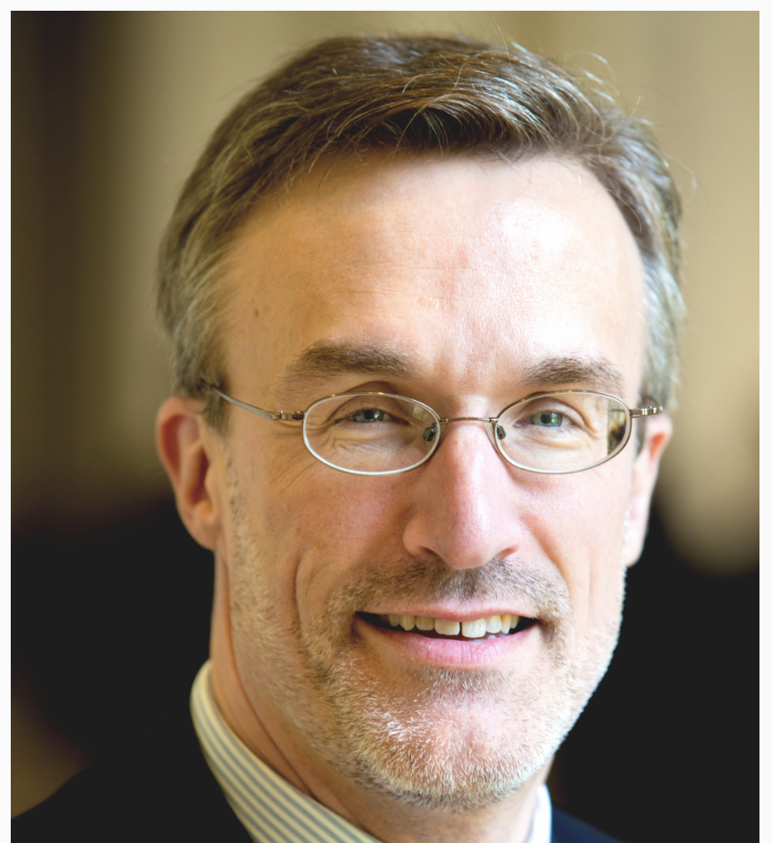

Speakers
Dr. Ifeoma Ajunwa, J.D., Ph.D. is an award-winning tenured law professor at the University of North Carolina School of Law and an adjunct Associate Professor at the Kenan-Flagler School of Business where she is a Rethinc. lab Fellow. She is also the Founding Director of the Artificial Intelligence Decision-Making Research (AI-DR) Program at UNC Law and a Faculty Associate at the Berkman Klein Center at Harvard University since 2017. She was a 2019 recipient of the NSF CAREER Award. Dr. Ajunwa’s research interests are at the intersection of law and technology with a particular focus on the ethical governance of workplace technologies. Dr. Ajunwa’s forthcoming book, “The Quantified Worker,” which examines the role of technology in the workplace and its effects on management practices as moderated by employment law will be published by Cambridge University Press in April 2023. Dr. Ajunwa is a Founding Board Member of the Labor Tech Research Network which is an international group of scholars committed to the research of the ethics of AI used in the workplace and for labor. Dr. Ajunwa has been invited to testify before the U.S. Congress (Committee on Education and Labor), governmental agencies such as the Equal Employment Opportunity Commission (the EEOC), and has served as a keynote speaker at several national and international conferences. Her writing has also been published in the NY Times, the Washington Post, the Atlantic, and the Harvard Business Review, among others. She is on twitter @iajunwa.
Kai-Wei Chang is an associate professor of Computer Science at the University of California Los Angeles (UCLA). His research interests include designing robust machine-learning methods for large and complex data and building fair, reliable, and accountable language processing technologies for social good. Dr. Chang’s research has been covered by news media such as Wires, NPR, and MIT Tech Review. His awards include the Sloan Research Fellowship (2021), the EMNLP Best Long Paper Award (2017), the KDD Best Paper Award (2010). Additional information is available at http://kwchang.net
 Cary Coglianese is a professor of law and political science at University of Pennsylvania School of Law and the director of the Penn Program on Regulation. He specializes in the study of administrative law and regulatory processes, with an emphasis on the empirical evaluation of alternative processes and strategies and the role of public participation, technology, and business-government relations in policymaking. He has provided research and advice on various regulatory issues to the Alberta Energy Regulator, Environment Canada, the U.S. Department of Transportation, the U.S. Environmental Protection Agency, and the Organization of Economic Cooperation and Development (OECD).
Subbarao Kambhampati is a professor of computer science at Arizona State University. Kambhampati studies fundamental problems in planning and decision making, motivated in particular by the challenges of human-aware AI systems. He is a fellow of Association for the Advancement of Artificial Intelligence, American Association for the Advancement of Science, and Association for Computing machinery, and was an NSF Young Investigator. He served as the president of the Association for the Advancement of Artificial Intelligence, a trustee of the International Joint Conference on Artificial Intelligence, the chair of AAAS Section T (Information, Communication and Computation), and a founding board member of Partnership on AI. Kambhampati’s research as well as his views on the progress and societal impacts of AI have been featured in multiple national and international media outlets. He can be followed on Twitter @rao2z.
Paul Ohm is a Professor of Law at the Georgetown University Law Center in Washington, D.C. In his research, service, and teaching, Professor Ohm builds bridges between computer science and law, utilizing his training and experience as a lawyer, policymaker, computer programmer, and network systems administrator. His research focuses on information privacy, computer crime law, surveillance, technology and the law, and artificial intelligence and the law. Professor Ohm serves as the Chair of the Georgetown Tech & Society Initiative as well as a faculty director for the Institute for Technology Law and Policy.
Alfred Engelberg Professor of Law Katherine J. Strandburg directs NYU’s interdisciplinary Information Law Institute and Privacy Research Group and is a faculty director of NYU’s Engelberg Center on Innovation Law and Policy. She researches information privacy, automated decisionmaking, patents and innovation policy. She received her JD from the University of Chicago in 1995, clerked for the Honorable Richard D. Cudahy of the US Court of Appeals for the Seventh Circuit and spent several years in private legal practice. Previously, she was a physicist at Argonne National Laboratory, having received her PhD from Cornell and conducted postdoctoral research at Carnegie Mellon.
Tianhao Wang is an assistant professor of computer science at the University of Virginia. His research interests lie in data privacy and security, and their connections to machine learning, cryptography, and human factors. He obtained his Ph.D. from Purdue University in 2021 and did a postdoc at Carnegie Mellon University. His work about differentially private synthetic data generation won multiple awards in NIST’s competitions.